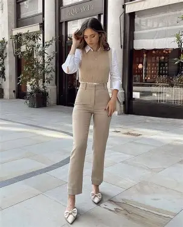

Casual Outfit Suggestions
Based on your selections, here are some outfit suggestions for a casual day out:
For Men:
- Classic Everyday Look
- T-shirt (solid or minimal print)
- Jeans (slim or straight fit)
- Sneakers
- Smart Casual Vibe
- Polo T-shirt or casual shirt
- Chinos
- Loafers or clean sneakers
- Layered Street Style
- Basic T-shirt
- Open shirt / flannel / light jacket
- Jeans or cargo pants
- Sneakers
- Athleisure Look
- Hoodie or sweatshirt
- Joggers
- Sports shoes
- Minimalist Casual
- Solid color sweater
- Dark jeans or trousers
- Watch + simple sneakers
🌸 For Women
- Sweater + Jeans Look
- Soft knit sweater
- High-waist jeans
- Sneakers or ankle boots
- Oversized Fit Style
- Oversized sweatshirt
- Straight-leg jeans or joggers
- Sneakers
- Casual Kurti Fusion
- Short kurti + jeans
- Sneakers or flats
- Minimal accessories
- Denim-on-Denim
- Denim jacket + jeans
- Plain top inside
- White shoes
- Street Style Look
- Crop top
- Cargo pants
- Sneakers
